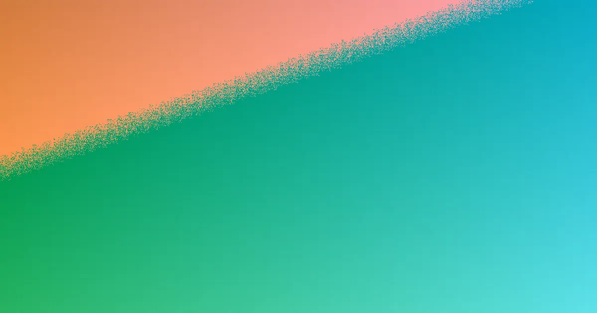

When comparing Toowoomba fencing contractors, focus on material suitability for your property's needs, understanding boundary responsibilities, site access, and ensuring a detailed written quote. This approach moves beyond a quick price to a more informed decision, ensuring the fence meets functional requirements and complies with local regulations.
For local buyers, fencing contractors toowoomba how to choose the practical decision is less about a quick price and more about material fit, boundary duties, access and a written scope.
Fencing Contractors Toowoomba How to Choose Explained
Many fencing projects in Toowoomba face delays due to a lack of precise site measurement or unresolved neighbour discussions. A comprehensive quote should detail more than just the fence material; it needs to specify the run length, whether old fence removal is included, any access challenges, and the exact material being quoted. This allows property owners to compare options accurately without making assumptions about what is covered.
It is important to note that there is typically no obligation or deposit required at the initial enquiry stage. This is beneficial as fence lines often present complexities such as slopes, retaining walls, corner block configurations, pool barrier requirements, or gate hardware, which necessitate a site measure before a simple replacement can be distinguished from a more involved project.
When requesting a quote, inquire if it itemises costs for removal, supply, installation, and access. For dividing fences, confirm if each owner can be invoiced separately for their share. Clarify whether the project involves a repair, a partial replacement, or a completely new fence installation.
Material Choice by Property Need
Colorbond is frequently the go-to material for boundary fences in Toowoomba due to its rapid installation, low maintenance, and colour palette that complements brick and render. Timber paling fences remain suitable for character-filled streets, while lapped and capped timber offers a solution for those concerned about gaps.
Other materials address specific needs. PVC fencing eliminates the need for painting, offering long-term low maintenance. Aluminium slat fencing provides a modern street presence, serving more as a decorative screen than a full privacy solution. Glass pool fencing is primarily considered for its compliance with safety standards before aesthetic appeal.
For commercial properties, schools, and yards, chain wire and tubular steel fencing are common choices. Driveway gates and automation systems are designed to integrate with the existing fence line. Fence repairs are also a consideration, and it is often prudent to obtain a quote for repairs before deciding on a complete replacement.
The initial consideration should be functional: do you need privacy, a specific street frontage appearance, a pool barrier, a commercial boundary, rural fencing, or driveway access? The material selection should follow this functional requirement.
Dividing Fence Questions Before Work Starts
In Queensland, if a fence is situated on the property boundary, it is classified as a dividing fence, and there is a legal framework for cost sharing. According to the Neighbourhood Disputes (Dividing Fences and Trees) Act 2011, adjoining owners are generally expected to contribute equally to a 'sufficient' dividing fence. For residential properties, this typically means a fence between approximately 0.5 metres and 1.8 metres in height, constructed from standard materials like palings, chain wire, metal panels, or brick.
A key point of discussion arises when one owner desires a fence exceeding these standard specifications, such as a taller or more premium Colorbond fence. In such cases, the additional cost is usually borne by the owner requesting the upgrade. It is advisable to have these discussions and reach an agreement before any work commences or a formal notice is served.
If an agreement cannot be reached, the Act provides a formal process. A 'notice to contribute' can be issued, which must clearly state the land involved, the fence line, the proposed work, and the estimated cost, accompanied by at least one written quotation. Should an agreement still not be reached within one month of this notice, either owner has the option to apply to the Queensland Civil and Administrative Tribunal (QCAT) within two months of the notice being issued.
Height, Corners, and Pool Barriers
Understanding fence height regulations is crucial. In Queensland, fences up to 2 metres above natural ground level are generally considered accepted development, meaning they do not require specific council approval. However, fences exceeding this height are classified as building work and necessitate approval from a certified building certifier.
It is important to note that the height measurement includes any supporting structures. For instance, if a fence is built on top of a retaining wall, the combined height of the wall and the fence is measured. This means a relatively low retaining wall combined with a standard fence could potentially exceed the 2-metre limit without the owner intending it to.
Corner blocks present unique considerations. The source page mentions that corner properties often require sight-line truncations at the intersection. This design constraint ensures that front fencing is kept low enough to maintain visibility for drivers, which can influence the appropriate height, openness, and suitability of solid screening in those areas.
Pool fencing is a distinct category governed by specific regulations. In Queensland, pool fencing must be constructed to meet the Queensland pool safety standard. Both glass and aluminium barriers are common service options. When obtaining a quote for pool fencing, it should be clear that the primary focus is compliance with safety standards, with aesthetic choices like colour and style being secondary considerations.
- Define the Fence Line. Record the suburb or postcode, the total run length, identify all access points, assess the condition of the existing fence, and note if the line is shared with a neighbour.
- Choose the Job Type. Determine your primary need: privacy, a specific street frontage appearance, a pool barrier, commercial security, rural fencing, gate automation, or a repair. Select the material that best suits this function.
- Get a Written Quote. Ensure the quote clearly details the materials, the length of the run, any removal of the old fence, and site access. This allows for accurate comparison and discussion with neighbours.
- Check Formal Triggers. Ask if the project might trigger requirements related to the QBCC licence threshold ($3,300), the 2-metre height limit, proximity to a retaining wall, corner sight line rules, or pool barrier regulations.
Common questions
Whose responsibility is it to pay for a dividing fence? In Queensland, adjoining owners generally contribute equally to a 'sufficient' dividing fence (approx. 0.5m to 1.8m high). If one owner desires a taller or more premium fence, they typically bear the additional cost.
What is the maximum height for a fence in Queensland? Fences up to 2 metres above natural ground level are usually accepted development. Anything higher is considered building work and requires approval from a certified building certifier.
What happens if my neighbour and I disagree on a dividing fence? If agreement isn't reached, you can issue a formal 'notice to contribute' with a quote. If no agreement follows within a month, either party can apply to QCAT within two months of the notice.
This guide applies to Toowoomba homeowners comparing fencing contractors, focusing on material, boundary, and quote specifics.